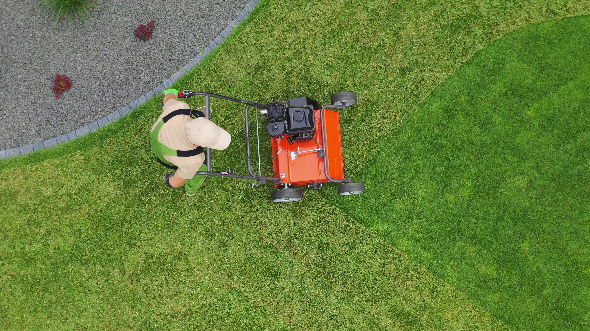
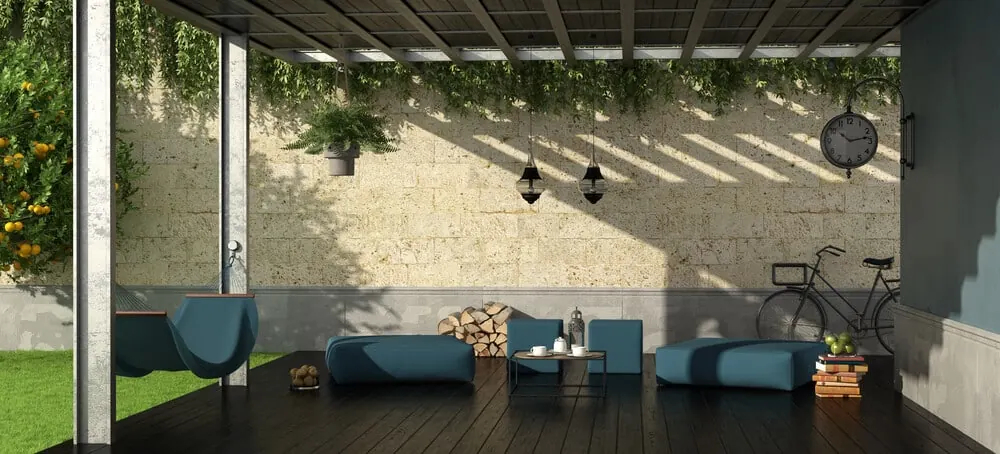
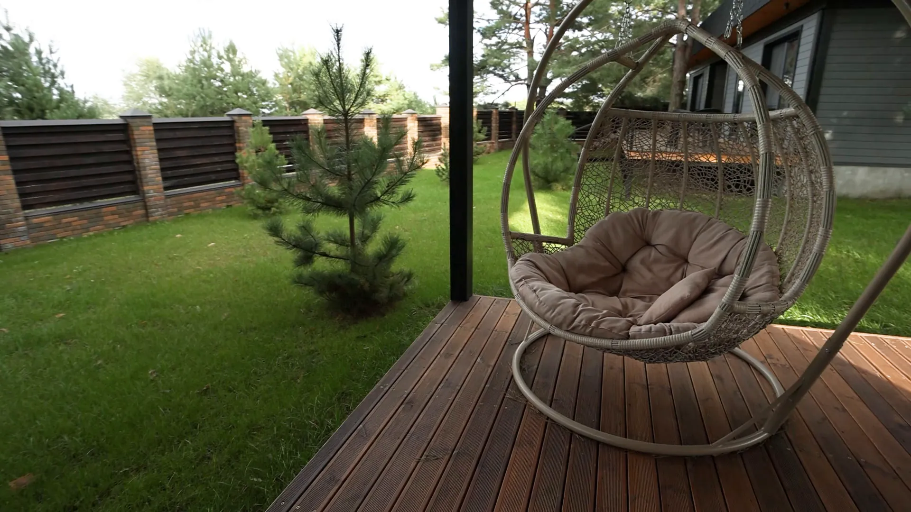

A Look Before the Quote
We walk your River Ridge yard at no charge, then put a no-obligation price in writing so you know the scope up front.

At Big Easy Lawn Care, we provide lawn service for River Ridge homes and businesses, from weekly mowing and edging to bed mulching, cleanups, and landscape work. Most yards here surround houses built decades ago, so we plan each visit around established beds, older turf, and the trees that have grown up over it.
When you hire our River Ridge lawn service, you get a free on-site consultation and a no-obligation quote, work by a fully insured lawn professional, and a satisfaction guarantee on every visit. You choose a single visit or a recurring plan, for a house or a business property, and handle scheduling and payments online.
We walk your River Ridge yard at no charge, then put a no-obligation price in writing so you know the scope up front.
The job goes to a fully insured lawn professional, which protects you and your property while the work is underway.
Book one-time mowing and weed-eating to catch up, or set a maintenance program that keeps the yard on schedule.
We care for family lots as well as business frontage along the main roads, each planned around how the property is used.
Check upcoming service, pay your bill, and request another visit from a phone or web browser, without waiting on hold.
Our satisfaction guarantee means a missed corner or an uneven edge gets fixed once you let us know about it.
River Ridge homeowners usually hand off their lawn care when an older yard starts asking for more time than they have. Beds planted years ago spill past their edges, turf thins where trees have spread, and a long growing season means the mower never really gets put away. A steady crew takes that off their list.
In River Ridge, our lawn crew can take care of three groups of lawn and yard services. Maintenance covers mowing, trimming, weed cutting, mulching, pressure washing, and hauling, while landscaping covers new beds and the restoration of tired yards. Outdoor living covers pergolas, decks, and similar projects, and each one starts with a free estimate.

Routine care that keeps a River Ridge lot neat from the front walk to the back fence.

Fresh beds, plantings, and repairs for a yard whose layout has aged along with the house.
Explore Landscaping
Covered spots to sit and cook outside, added to a backyard that already has room to spare.
Explore Outdoor LivingA River Ridge lawn needs professional care when the turf feels spongy or sits above the soil, when grass fades out under spreading trees, or when it turns pale and patchy even with regular mowing. Each one points to a cause that mowing alone will not fix, so it pays to find it early.
LSU AgCenter describes a lawn that feels puffy underfoot, with the grass base raised above the soil, as a sign of excess thatch. Heavy nitrogen and poor watering habits can both add to it.
As trees fill out over the years, the lawn below them gets less sun. Grass that once grew there can thin until bare soil shows through.
Yellowed or patchy turf despite steady care can trace back to soil pH or a missing nutrient. A soil test through LSU AgCenter shows which one before anything gets applied.
Older River Ridge yards need extra lawn care because most belong to owner-occupied, single-family homes, and roughly half of those homes were built in the 1960s and 1970s. A yard laid out that long ago usually needs its edges, beds, and turf brought back into shape before routine mowing can keep it looking right.

A local lawn care team brings River Ridge yards steady, familiar service: we work the same East Bank yards week after week and answer to a locally owned company in New Orleans. That means a free look at your property before any quote, an insured professional on the job, and a satisfaction guarantee.
Our company is locally owned, with its office on Magazine Street in New Orleans.
Every price follows a free visit to your lot, so nothing is guessed over the phone.
An insured lawn professional handles the work, and our guarantee stands behind it.
Move a visit, add a service, or pay a bill online whenever plans shift.
Expect three steps from lawn service in River Ridge, LA. We visit the property for a free consultation and send a no-obligation quote, then a fully insured lawn professional completes the agreed work. After that, you keep track of visits, payments, and add-on services from your phone or web browser.
We note the turf, the tree cover, the beds, and the gates, then send you a clear written quote.
Your lawn professional completes the agreed list of work, from the turf to the beds and edges.
Pay online and book an extra visit when growth or weather puts the yard behind.

To prepare your River Ridge yard for a lawn care quote, settle three things: whether it needs a one-time catch-up or a recurring plan, which areas you want covered, and anything a crew should know about getting in. With those answers ready, the quote is accurate and the first visit goes as planned.
One visit can reset an overdue lawn, and a standing plan stops it from falling that far behind again.
Note the turf, beds, and edges you care about most, plus any larger plan such as landscape building or an outdoor deck.
Let us know about locked gates, dogs in the yard, and the best place to leave a truck.

Our lawn service reaches well beyond River Ridge. The same team covers Harahan, Kenner, Metairie, New Orleans, and Gretna, and across the lake we work in Covington, Mandeville, Madisonville, and Abita Springs. Across that area, our services include grass cutting, mulching, and cleanup and hauling, along with landscaping and outdoor living work.
River Ridge began as sugar plantation land worked by French colonists and their descendants, and it stayed rural until suburbs spread after World War II. It took its current name in 1974 and remains an unincorporated part of Jefferson Parish.
River Ridge is mostly homes, so time outside tends to mean a parish park, the river levee, or a short trip to Kenner. These are the spots local sources point to.
Our crews also look after lawns in these communities around River Ridge. Four of them sit across Lake Pontchartrain on the Northshore.
River Ridge packs a lot of neighbors into a small footprint, and most of them have been there a while. Here are a few more numbers and notes about the community.
Jefferson Parish Transit runs the buses that serve River Ridge, with the Jefferson Highway line stopping at Little Farms Avenue. Riders can plan trips, track buses, and pay in the Le Pass app.
The lawn care questions we hear from River Ridge cover basics that fit established yards: what to do with grass clippings, how centipedegrass spreads and copes with shade, what thatch is, and how to get a soil tested. Plenty of homeowners also want to confirm which parish they live in. These are the answers.
River Ridge is in Jefferson Parish, on the parish's East Bank. It is an unincorporated community that the Census Bureau counts as a census-designated place, so it has no city government of its own, and it had 13,591 residents in the 2020 Census. We cover lawns across the whole community.
Usually not. LSU AgCenter says properly managed clippings will not contribute to thatch buildup, and they return nutrients to the lawn as they break down. The key is mowing often enough to remove no more than about a third of the blade each time, so the pieces stay small and sift down into the turf.
Yes, in a modest way. LSU AgCenter notes that clippings can supply much of the nutrients a lawn needs as they decompose, so a River Ridge lawn that keeps its clippings may need less nitrogen fertilizer. That benefit depends on regular mowing, which keeps the clippings small enough to break down quickly.
Yes. LSU AgCenter says clippings can be dried and spread on planting beds as mulch, as long as no herbicide has been applied to the lawn within the past month. They also make a good addition to a compost pile, which is a handy outlet for River Ridge yards with flower or vegetable beds.
Yes. LSU AgCenter explains that centipedegrass grows stolons, which are aboveground stems that let it spread sideways across the soil surface. It fills in best with full sun, a mowing height of about 1 to 2 inches during the growing season, and fertilizer applied from midspring to midsummer rather than earlier.
Only in light shade. LSU AgCenter says centipedegrass performs best in full sun and will decline in heavily shaded areas. In an established River Ridge yard where trees have grown out over the lawn, the darkest spots may do better as mulched beds than as turf that keeps thinning out.
Thatch is a layer of living and dead plant tissue, such as stolons and rhizomes, that sits from just above the soil into its upper portion. LSU AgCenter says it becomes a problem when the lawn feels spongy underfoot or the grass base rises above the soil, and heavy nitrogen can make it worse.
Pick up a kit from your parish LSU AgCenter office, which for River Ridge is Jefferson Parish, or from a nursery that offers one. LSU AgCenter advises taking soil from several spots about 3 to 5 inches deep, removing grass and roots, and blending it before sending it in. Results cover pH and key nutrients.
Join our satisfied and happy customers. Get your free lawn care assessment today.